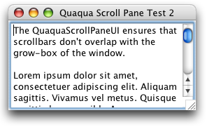
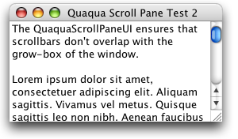

Property |
Type | Notes |
|---|---|---|
|
java.lang.String |
Values: "regular", "small" |
Quaqua.Component.visualMargin |
java.awt.Insets |
See layout |
The QuaquaScrollPaneUI ensures that scrollbars don't overlap with the grow-box of the window.

If your JScrollBar is filling the entire region of a JFrame, it is best to set its border to null. This way, your application will very much look like a native application.

The following code snippet was used to create the window shown above:
import javax.swing.*; public class ScrollPaneTest2 extends JFrame { JTextArea ta = new JTextArea(); ta.setLineWrap(true); "ch.randelshofer.quaqua.QuaquaLookAndFeel" ); |